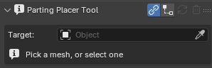

Install, Update, Uninstall¶
Applies to: Parting Placer V2.0.0 · Blender 4.4 · 5.2
Install the add-on from its .zip file and find its panel in the 3D Viewport.
You Need First
- The add-on .zip file from your purchase.
- A Blender version from Requirements And Compatibility.
Install¶
- In Blender, open Edit > Preferences.
- Select Add-ons.
- Select the down arrow at the top right of the Add-ons section, beside Enabled Only.
- Select Install from Disk....
- Pick the add-on .zip file.
- Enable Parting Placer Tool in the add-on list.
- In the 3D Viewport, press N to open the sidebar.
- Select the Parting Placer tab.

Update¶
Install the new version over the old one. You don't need to uninstall first.
- Open Edit > Preferences.
- Select Add-ons.
- Select the down arrow at the top right of the Add-ons section.
- Select Install from Disk....
- Pick the new add-on .zip file.
After updating, open each file that already has partings. Select Repair Partings once in that file. See Repair Partings.
Uninstall¶
- Open Edit > Preferences.
- Select Get Extensions.
- Find Parting Placer Tool in the Installed list.
- Select the down arrow at the right of its row.
- Select Uninstall.
Partings already in your files stay where they are and still show on the head. Without the add-on you can't edit them from the panel.
If You're Stuck
- Still stuck after installing? See Still Stuck.
Recommended next: Your First Parting In 10 Minutes